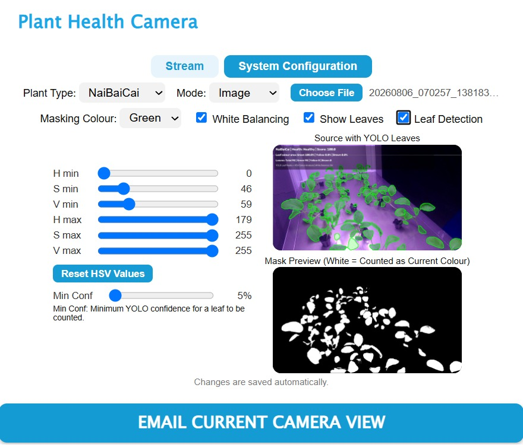

Mini Urban Farming Project
An indoor farming system that combines a Node-RED control dashboard with a Python computer vision application for monitoring plant leaves. I am currently debugging and improving both the control and vision components.
- Resolved Node-RED control faults such as intermittent water pump and leak sensor through debugging.
- Developing an improved plant leaf detection model, with a calibration system for colour masking, white balancing and HSV tuning.
